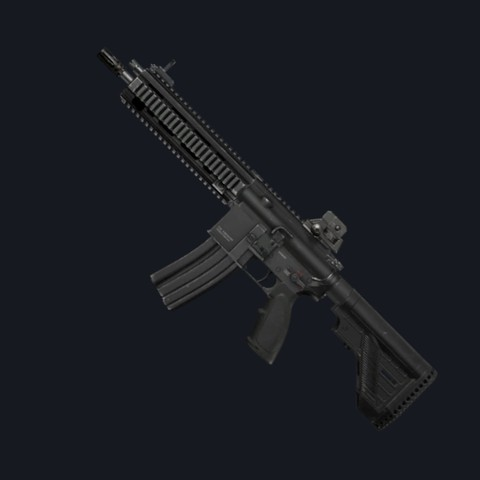
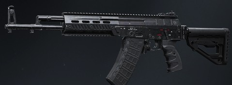
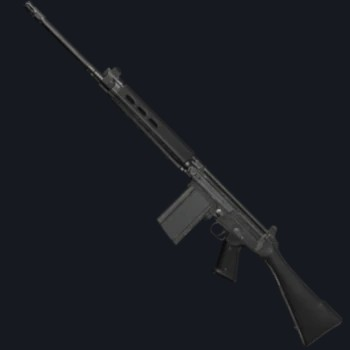
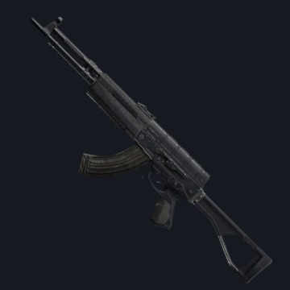
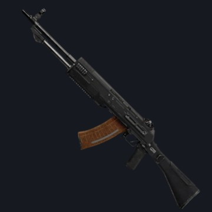
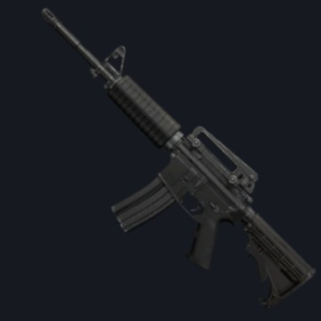
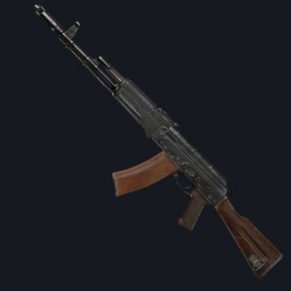
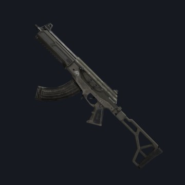
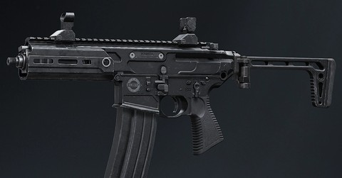
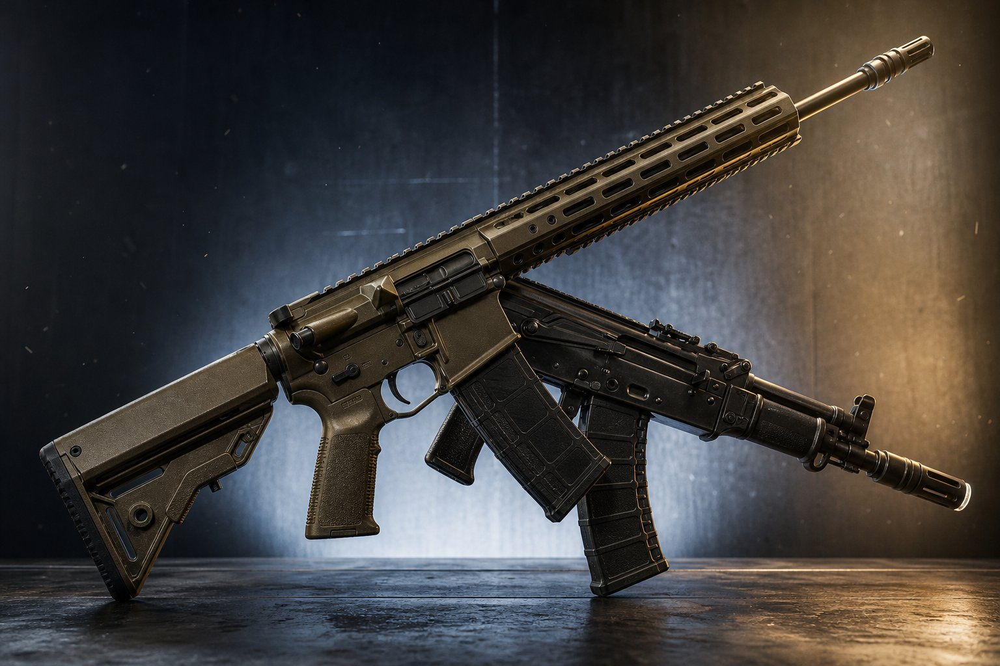

Le meta en un coup d'œil
Les fusils d'assaut sont l'épine dorsale d'ABI : 11 modèles dans notre référentiel, 91 armes au total dans le jeu en S7. Leur rôle : couvrir la majorité des engagements (15-70 m) avec un volume de feu qui pardonne les ratés. La méta S7 se lit en trois lignes :
- Haut de gamme : H416 (référence absolue), A545 (nouveauté S7), AK-12, U191 en concurrent DMR.
- Milieu de gamme : FAL (boosté par son kit saisonnier), AK-15SC (CQB 7.62), AEK-971 (900 RPM pas cher).
- Budget : AK-74N (70k), ACE31 (90k), M4A1 (120k) — tous jouables en Lockdown avec le bon budget munitions.
🎯 La règle d'or
Le kit est important, la munition l'est davantage. Un AK-74N à 70k armé de BP (T4) bat un H416 armé de SS109 T3. Investis d'abord dans la pénétration, ensuite dans les accessoires.Tableau comparatif complet
| Arme | Cadence | Vitesse | Recul V | Recul H | Ergo | Portée | Prix ≈ | Tier |
|---|---|---|---|---|---|---|---|---|
| A545 ★S7 | 900 | 900 | 74 | 66 | 65 | 62 | 180k | S |
 H416 | 750 | 850 | 78 | 74 | 62 | 70 | 400k | S |
 AK-12 | 700 | 850 | 76 | 72 | 64 | 68 | 220k | S |
| AK-15SC ★S7 | 730 | 710 | 65 | 56 | 72 | 44 | 160k | A |
 FAL | 700 | 840 | 45* | 27* | 48 | 66 | 250k | A |
 AEK-971 | 900 | 750 | 62 | 58 | 56 | 55 | 110k | A |
 AN-94 | 600 | 900 | 80 | 70 | 54 | 70 | 190k | A |
 M4A1 | 800 | 820 | 70 | 68 | 66 | 64 | 120k | B |
 AK-74N | 650 | 830 | 68 | 62 | 60 | 62 | 70k | B |
 ACE31 | 700 | 760 | 48* | 27* | 58 | 58 | 90k | B |
 MCX | 750 | 720 | 70 | 66 | 68 | 58 | 150k | B |
* Valeurs avec kit saisonnier / buffs S7. Recul = contrôle (plus haut = mieux).
Détail des tiers
| Tier | Armes | Pourquoi |
|---|---|---|
| S | A545 · H416 · AK-12 | La A545 arrive comme 3ᵉ option de sommet déclarée « sur un pied d'égalité avec le U191 et le H416 » par MoreFun. L'AK-12 tient le milieu Lockdown avec les T5. Recul maîtrisé, TTK optimal. |
| A | FAL · AK-15SC · AEK-971 · AN-94 | Dégâts bruts (FAL 7.62), cadence (AEK 900 RPM à 110k), burst 2 coups unique (AN-94, recul initial adouci en S7), CQB roi (AK-15SC). |
| B | M4A1 · AK-74N · ACE31 · MCX | Fiabilité et prix. L'AK-74N est le fusil le plus recommandé aux débutants en Lockdown ; l'ACE31 a été buffé (V 52→48, H 28→27) ; le MCX gagne en portée effective. |
Nouveautés & changements Saison 7
- 🆕 A545 : nouvelle arme de sommité, 900 RPM, compensateur dédié réglable en recul latéral.
- 🆕 AK-15SC : 7.62 CQB, ergonomie 72, canon pliable, ~150-250k en build complet.
- 🔧 FAL : Kit Recul saisonnier (V 40→45, H 22→27) — le vrai gagnant du patch.
- 🔧 AN-94 : recul des deux premiers coups du mode burst réduit.
- 🔧 ACE31 / MCX / AK-74N : améliorations de recul (ACE31) et de portée effective (MCX, AK-74N perf recul).
- ⚖️ Plafonds de munitions par mode : Normal ≤ T4, Lockdown ≤ T5, Forbidden sans limite — adapte ton stock avant de queue.
- 🎯 Headshots renforcés + ricochet casque supprimé : le tir précis est plus récompensant (voir Guide avancé).

Les 3 builds à connaître
| Build | Arme | Pièces clés | Budget |
|---|---|---|---|
| 💰 Budget Normal | AK-74N | Frein de bouche AK · chargeur 60 coups · point rouge · BP T4 | ~110k |
| ⚔️ Polyvalent Lockdown | AK-12 | Frein AK-12 · optique 1×/4× · BS/7N39 | ~350k |
| 👑 Laser Forbidden | H416 / A545 | Canon long · frein de bouche · poignée verticale · optique 4× · M995/7N39 | ~1M |
| 🔥 Méta spécial S7 | FAL + Kit Recul | Kit Recul saisonnier · canon long · M61 T5 | ~450k |
Munitions par mode (rappel S7)
⚖️ Plafonds officiels S7
Normal : munitions ≤ T4 et équipement ≤ T4 · Lockdown : ≤ T5 · Forbidden : aucune limite. Emporter du T5 en Normal est un gâchis — les plafonds ne sont plus qu'un coût.Principes de choix :
- Normal / Farm débutant : BP, PS, SS109 (T3-T4) — suffisant contre l'IA et le gear moyen.
- Lockdown : minimum T4, idéal T5 (7N39, AP, M61, M995) — le T5 est légal, les rushs le justifient.
- Forbidden : T5-T6 sans compter, mais pense au trade-off dégâts/prix (voir Guide économie).
FAQ fusils d'assaut
Le H416 reste au-dessus en stabilité et polyvalence (recul 78/74, portée 70), mais coûte plus cher. La A545 apporte 900 RPM avec un prix plus doux : si ta priorité est le contrôle de rafale en CQB/moyenne, A545 ; si tu veux le couteau suisse longue distance, H416.
L'AK-74N (~70k + chargeurs 60) avec BP/BS T4. Recul S7 amélioré, munitions pas chères, parts disponibles partout. Tu progresses vers l'AK-12 quand ton taux d'extraction dépasse 40 %.
Le mode rafale 2 coups inflige deux impacts quasi simultanés — avec des munitions T5, c'est un TTK brutal à moyenne distance. Le recul des deux premiers shots a été réduit en S7. C'est une arme de spécialiste : puissante, mais ergonomie faible (54).
Voir aussi : carabines ·Sources — Patch notes officiels S7 MoreFun/Steam (A545, AK-15SC, kits) · reddit r/ArenaBreakoutInfinite tier list S7 · abibuilder.com builds communautaires · bittopup/mmoexp loadout guides · arena-breakout-infinite.fandom.com (stats). Vérifié le 17 novembre 2026.